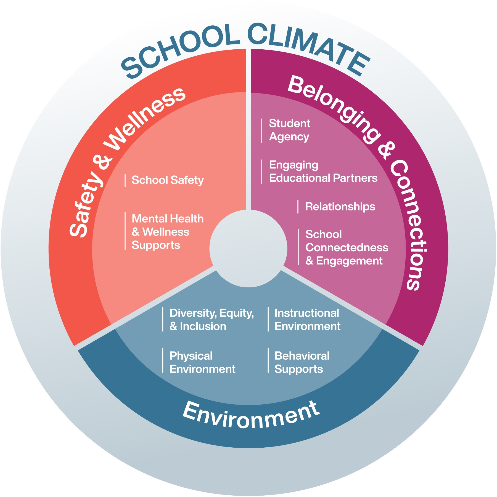

The school climate acts as the "fertile soil" in which academic success grows; without the right conditions, even the best curriculum will fail to take root. From a neuroscientific perspective, a positive climate is essential because the human brain cannot prioritize higher-level cognitive functions—like critical thinking and memory—if it is stuck in a state of stress or exclusion. When a school feels welcoming and safe, students’ cortisol levels drop, allowing the prefrontal cortex to engage fully with the learning material. Furthermore, a supportive atmosphere fosters intrinsic motivation; students aren't just studying to avoid punishment, but because they feel emotionally invested in a community that values their growth. Ultimately, when students feel seen, heard, and protected, their focus shifts from "surviving" the school day to "thriving" in their studies, leading to better grades, higher graduation rates, and a lifelong love for learning.